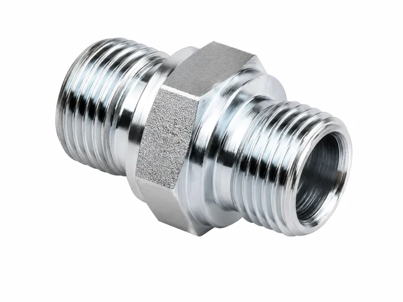
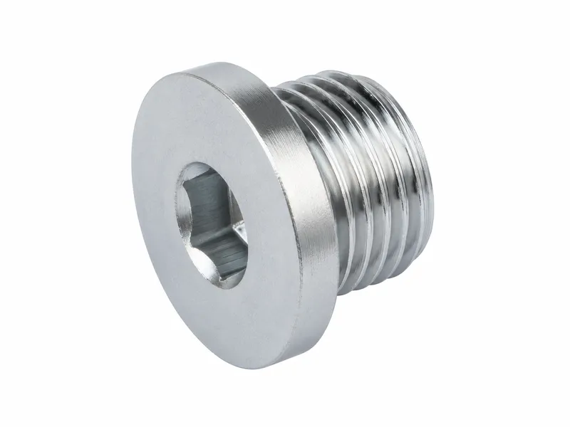
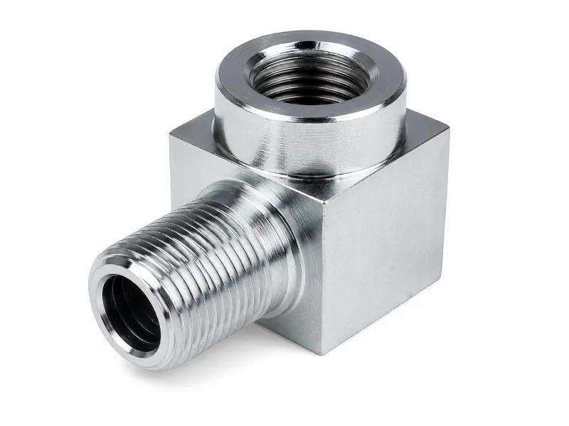
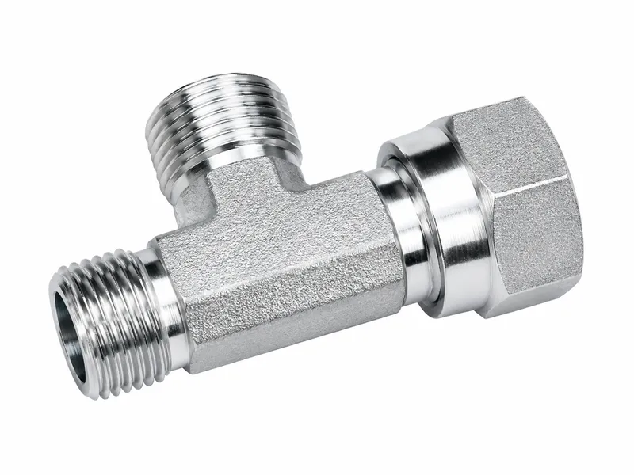

BSPP, BSPT and mixed-interface hydraulic adapters manufactured to customer drawings for ports, hose assemblies, tube connections and OEM hydraulic equipment.
BSPP is a parallel pipe thread, while BSPT is a taper pipe thread; the shared “BSP” name does not make their sealing arrangements identical. A BSPP seal location depends on the fitting and port design, while BSPT commonly uses controlled taper-thread engagement with an application-compatible sealant. Straight, elbow, tee, bulkhead and BSP conversion configurations can be machined to drawings, but the thread and sealing form of every connection end must be confirmed separately.





Wei Xing Machinery manufactures custom British pipe thread hydraulic adapters from approved 2D drawings, 3D models, samples and order requirements. Projects may combine BSPP hydraulic fittings or BSPT hydraulic fittings with JIC, NPT, metric, ORFS or hose interfaces.
BSP thread adapters are reviewed by connection end rather than treated as one universal design. This helps reduce mismatch risk and supports the specified sealing arrangement, subject to assembly and system validation.
| Product Type | Custom BSP hydraulic adapters and BSP conversion adapters |
|---|---|
| Thread Family | BSPP parallel and BSPT taper threads are distinct connection forms |
| Applicable Standards | Applicable BSPP or BSPT thread geometry can be manufactured according to ISO 228-1 or ISO 7-1 when specified by the customer drawing or order. |
| Sealing Arrangement | BSPP sealing must be confirmed from the fitting and port design. BSPT uses controlled taper engagement with application-compatible sealant. |
| Connection Ends | BSP, JIC, NPT, metric, ORFS or hose interfaces; every conversion port is confirmed separately |
| Body Materials | Carbon steel, stainless steel, reviewed brass or other drawing-approved materials |
| Surface Finish | Drawing- and material-specific finish coordinated to order requirements |
| Manufacturing Basis | Approved 2D drawing, 3D model, physical sample with verified dimensions, or order requirements |
| Inspection Basis | Approved drawing and agreed sampling or full-inspection plan |
| Pressure / Validation Basis | No category-wide rating is defined here; it depends on size, body geometry, material, wall thickness, seal, mate, assembly, media, temperature, complete hose or tube assembly and system validation. |
| Applications | Hydraulic ports, hose and tube assemblies, machinery and verified retrofit connections |
BSPP does not become tapered through tightening. It commonly provides retention or clamping; the port and fitting design locates the seal. A bonded seal, O-ring, flat face, shoulder or spotface may be used. A 60° cone seat is available when specified by the fitting design, mating component or customer drawing.
Engagement increases during tightening. Sealing depends on correct geometry, controlled engagement and compatible sealant. Excessive tightening can damage the parts; excessive sealant can enter and contaminate the hydraulic flow path.
| Thread Type | Thread Form | Primary Sealing Arrangement | Ordering Information |
|---|---|---|---|
| BSPP | Parallel pipe thread | Defined by port/fitting design, not automatically by the thread | State size, sex, seal feature, mate and applicable standard |
| BSPT | Taper pipe thread | Controlled thread engagement and compatible sealant | State size, sex, taper standard, mate, media and sealant constraints |
Assembly parameters must follow the applicable standard, fitting manufacturer's requirements, customer assembly specification, mating-port material and system requirements; no general torque or turn count applies to every configuration.
Available configurations depend on drawing review, tooling, material and production requirements. Conversion ends may use different threads and seals, so both ends must be ordered and verified separately.
| Connection Type | Thread or Interface Form | Primary Sealing Location | Selection Considerations |
|---|---|---|---|
| BSPP | Parallel, commonly 55° Whitworth form | Defined by fitting and port design | Verify seal feature and mating port |
| BSPT | 55° taper pipe thread | Taper engagement with applicable sealant | Verify diameter, pitch, form, taper and mate |
| NPT | 60° taper pipe thread | Taper engagement with applicable sealant | Not interchangeable with BSPT by appearance |
| JIC 37° | 37° metal flare; thread supplies clamp load | Mating flare faces | Confirm tube size, sex and flare condition |
| ORFS | O-ring flat face; straight thread supplies assembly force | O-ring against flat mating face | Confirm O-ring, face and interface dimensions |
Use the BSP versus NPT thread identification and sealing guide before specifying similar-looking pipe threads.
Depending on the approved design, operations can include CNC turning and milling, external and internal thread machining, BSPP parallel and BSPT taper thread machining, drilling, tapping, hex and wrench-flat machining, specified cross holes, sealing faces, deburring, cleaning and dimensional inspection. Specified 60° cone seats and bonded-seal or port spotfaces can also be machined where required. Not every operation applies to every adapter.
Surface finishing can be coordinated according to material and order requirements.
Carbon steel and stainless steel are reviewed against the drawing. Brass is considered only after media, mechanical and project review. Other materials and specific grades are subject to drawing and application review.
Options may include trivalent zinc plating, zinc-nickel coating, black oxide, phosphating when applicable, natural stainless finish, and passivation when specified and material-compatible.
Surface finish does not replace correct material selection, sealing design or system corrosion engineering.
Inspection begins with drawing, revision, material and documentation review plus thread-family identification. The agreed plan may cover external/internal threads with gauges or approved mates; BSPP pitch, diameter and fit; BSPT taper and engagement; specified sealing faces, cone seats or spotfaces; overall and thread lengths; hex dimensions; cross holes, flow passages, edge breaks, deburring, finish and cleanliness.
Sampling or full inspection follows the agreed plan. Pressure or leak testing is performed only when specified, with its method and acceptance criteria defined for the project.
“BSP adapter” alone is not enough for an accurate quotation. At minimum, identify BSPP or BSPT, nominal size, male or female end, sealing form and the opposite-end interface.
Wei Xing Machinery manufactures to customer-approved drawings, models, samples and order requirements. The customer or system designer confirms interface selection, sealing, pressure rating, media compatibility, assembly and complete-system validation. Sample appearance alone cannot define internal thread, taper, sealing face, tolerance or material. Similar-looking BSPP, BSPT and NPT connections must not be substituted without verification; both ends of a conversion adapter require separate confirmation. Final acceptance follows the approved drawing and agreed inspection plan.
BSP hydraulic adapters connect verified BSPP or BSPT ports to hose, tube or other hydraulic interfaces. BSP is a pipe-thread family, not a single sealing arrangement, so each connection end must be defined separately.
BSPP is parallel and normally provides retention or clamping while the fitting and port design defines the seal. BSPT is tapered and uses controlled taper-thread engagement with a compatible sealant.
Depending on the specified fitting and port design, BSPP may seal at a bonded seal, O-ring, flat face, shoulder or spotface, or a 60° cone seat. The parallel thread itself does not automatically define the sealing location.
BSPT sealing depends on correct taper-thread geometry, controlled engagement and a sealant compatible with the media, temperature, materials and system. Avoid excessive sealant and keep it out of the flow path.
No. BSPT and NPT can look similar but differ in thread form and may differ in diameter, pitch, taper, standard and sealing method. Verify the mating component and all connection data before substitution.
Provide a drawing or verified sample, BSPP or BSPT identification, nominal size, male or female form, sealing arrangement, every opposite-end interface, material, finish, quantity, application and inspection or validation requirements.
Carbon steel and stainless steel are available by drawing review. Brass requires media, mechanical and project review. Finishes may include trivalent zinc, zinc-nickel, black oxide, applicable phosphating, natural stainless finish or specified compatible passivation.
Yes. Drawing-specific BSP-to-JIC, BSP-to-NPT, BSP-to-metric, BSP-to-ORFS and hose-interface adapters can be reviewed. Each end's standard, size, male or female form and sealing location must be confirmed separately.
Submit the drawing, BSPP or BSPT thread details, sealing arrangement, opposite-end connection, material, quantity and application requirements for manufacturing review and quotation.